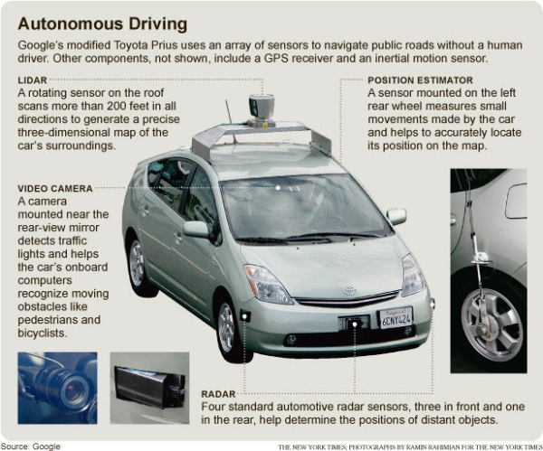

The average human brain has 100 billion neurons. Each neuron may have up to 7,000 connections to other neurons. Each neuron fires about 200 times a second. Since the neurons are slow firing, they work concurrently with each other. In comparison, a computer can perform several billion operations per second.
Current estimates believe that if a computer could be constructed that is about 10,000 times faster than a desktop computer, that it can hold the computational ability of a human brain. Today's limitations exist not from hardware, but from software. No one knows how to write the software. Essentially, human DNA is the software for the human brain. An entire person's DNA contains 3 billion base pairs, which can fit onto a CD (~700 MB). Using DNA as a reference for software, only about 10% of the DNA makes up the intelligence portion of the thought process. Most of a person's DNA are the leftovers from evolution. Under this assumption, the potential difference in software between chimpanzees and humans could be as little as 0.01 MB of space.
The 1970's SHRDLU computer AI showed the parsing of language and learning from human interaction. Computers lack the ability to learn through senses such as touching, for instance the description of a feather can be programmed, but the physical object itself is what makes a feather. However, robots can locate and identify real objects by looking up images of them on the internet. Computers theoretically will be able to operate at a quantum level. In comparison, it is unlikely, that the human brain operates at the quantum level.
Google's self driving car is a very good representation of a long-term study with artificial intelligence in real world scenarios. Sensors detect objects and are passed into the software, which determines objects based on their size, shape, and movement pattern. Google's about page has a great explanation of how the car interacts with its environment. 
Google's director of engineering, Ray Kurzweil, in 2014, suggested that the only way it would be possible construct humanistic artificial intelligence, would be by mapping the entire human brain to the sub-cellular level. He further believes it may be possible to complete this entire mapping between the years 2020 to 2030.